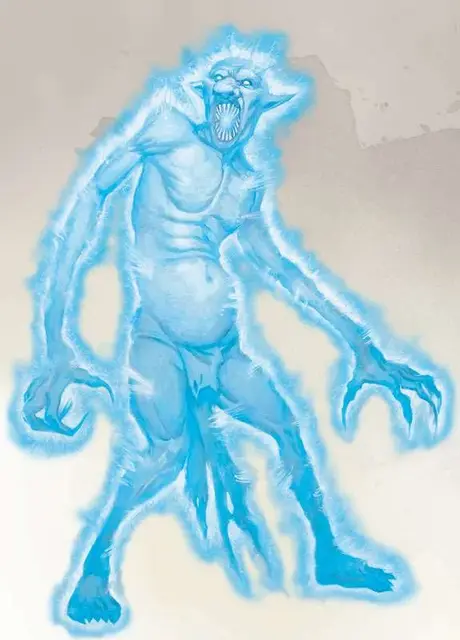

Тролль-дух
Spirit Troll
Большой Великан, обычно хаотично-злой

Класс Доспеха 17 (природный доспех)
Хиты 130 (20к10 + 20)
Скорость 30 футов
| мод | спас | ||
|---|---|---|---|
| СИЛ | 1 | −5 | −5 |
| ЛОВ | 17 | +3 | +3 |
| ТЕЛ | 13 | +1 | +1 |
| мод | спас | ||
|---|---|---|---|
| ИНТ | 8 | −1 | −1 |
| МДР | 9 | −1 | +5 |
| ХАР | 16 | +3 | +2 |
Навыки Восприятие +3
Сопротивление урону кислота, огонь, холод; дробящий, колющий, рубящий от немагических атак
Иммунитет к состояниям окаменение, опутанность, сбивание с ног, захват, паралич, истощение, бессознательность
Чувства тёмное зрение 60 футов, пассивное Восприятие 13
Языки Великаний
Опасность 11 (7200 опыта)
Бонус мастерства +4
Среда обитания Болото, Лес, Побережье, Подземье
Особенности
Бестелесное перемещение. . Тролль может проходить сквозь существ и прочие объекты так, как если бы они были труднопроходимой местностью. Он получает 5 (1к10) урона силовым полем, если заканчивает ход внутри объекта.
Регенерация. . Тролль восстанавливает 10 хитов в начале каждого своего хода. Если до этого он получил урон психической энергией или силовым полем, то хиты в ближайшем ходу не восстанавливаются. Тролль умирает, если начинает свой ход с 0 хитов и не восстанавливает их регенерацией.
Действия
Мультиатака. Тролль совершает одну атаку Укусом и две атаки Когтями.
Укус. . Рукопашная атака оружием: +7 к попаданию, досягаемость 5 футов, одна цель. Попадание: 19 (3к10 + 3) урона психической энергией и цель должна преуспеть в спасброске Мудрости Сл 15, иначе станет ошеломлённой на 1 минуту. Ошеломлённая цель может повторять спасбросок в конце каждого своего хода, завершая эффект на себе при успехе.
Когти. . Рукопашная атака оружием: +7 к попаданию, досягаемость 5 футов, одна цель. Попадание: 19 (3к10 + 3) урона психической энергией.
Описание
Тролль, взорванный психической энергией может принимать бестелесную форму, когда будет регенерировать. Если его дух выдержит такую регенерацию, то тело становится таким же нематериальным, как и тень. При этом тролль может не догадываться о подобном изменении – он всё ещё будет двигаться и атаковать зубами и когтями, как и делал это всегда. Но вместо физических повреждений он теперь будет причинять повреждения разуму цели.
Тролли
Тролли, что после уничтожения смогли выжить и восстановить раны на своём теле, проявляют аномальные мутации. Часто подобные искаженные тролли появляются, если существо восстанавливается в присутствии магического излучения, планарной энергии, заболеваний, смертей в широких масштабах, или если тело было повреждено элементальными силами. Этих мутированных созданий также можно получить и сформировать с помощью обрядной магии злых заклинателей или собственными практиками троллей, как в случае с лютыми троллями.
Вапрак разрушитель
Хоть тролли слабо набожны и редко задаются духовными вопросами, они боятся и поклоняются сущности, известной как Вапрак Разрушитель. Как и у множества низших божеств, истинная природа Вапрака довольно загадочна, но он всегда изображается как ужасное, деформированное зеленоватое существо, сильно напоминающее тролля. У него случаются приступы бездумного разрушения и постоянные бредни о планах и замыслах прочих божеств.
Тролли считают, что Вапрак пожирает тех, кто находится присмерти, но только если тролль уже приготовлен или переварен (убит огнём или кислотой). В ином случае божество выплевывает душу обратно в мир, чтобы возродить новое тело.